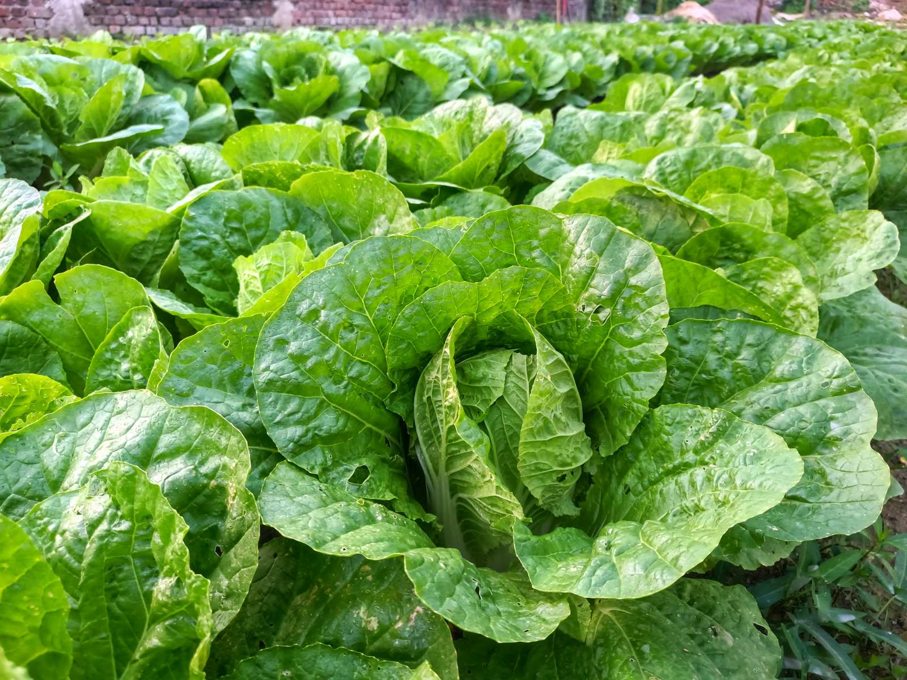
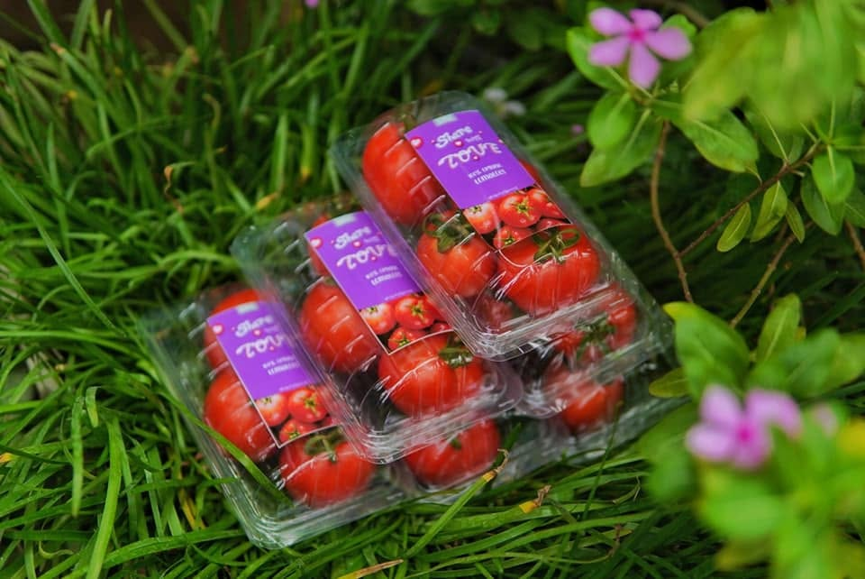
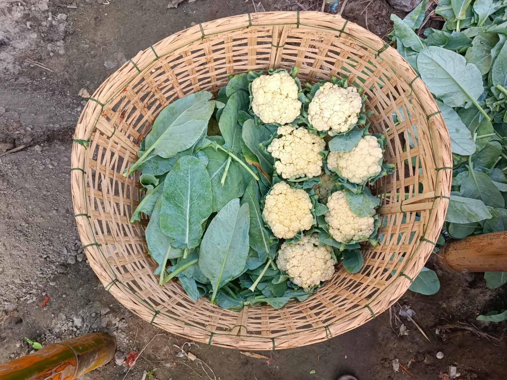
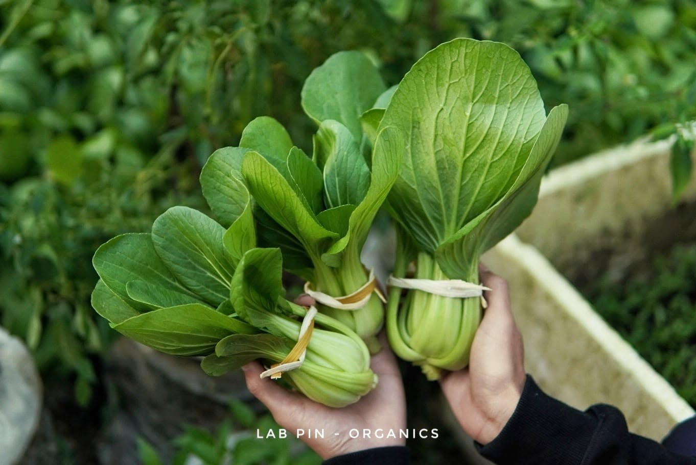
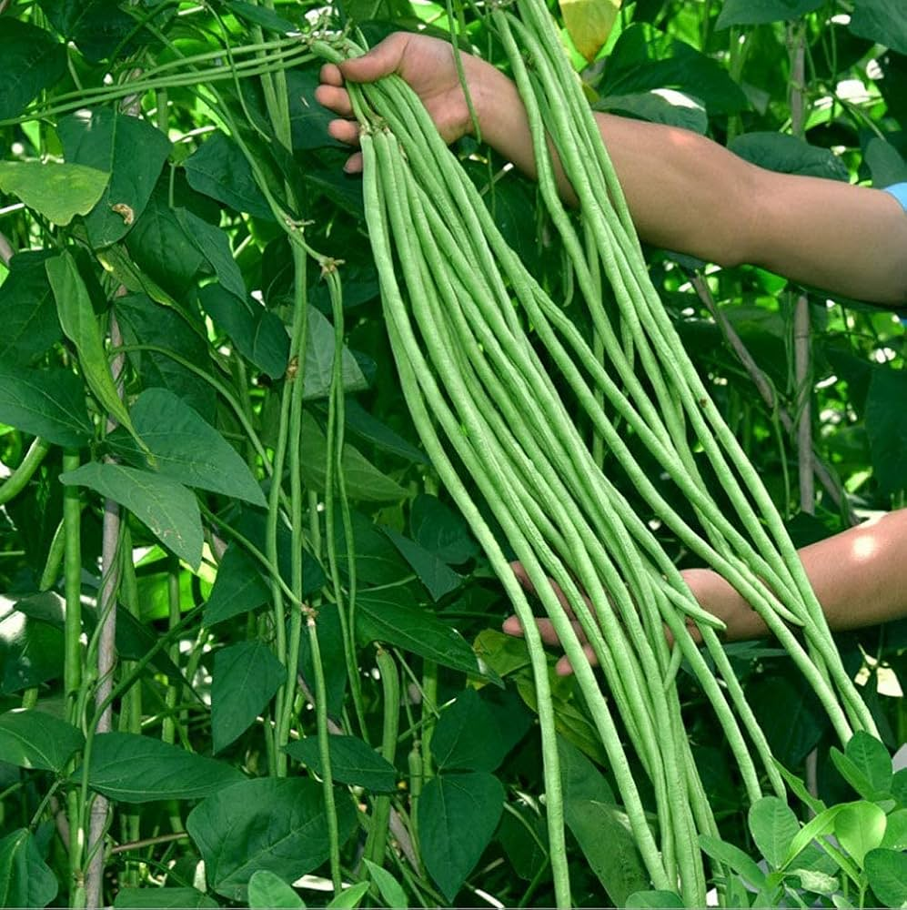

What's Growing
Fresh from the Farm
Harvested at peak ripeness and delivered within hours. Seasonal availability may vary.

In SeasonCabbage
Crisp, tightly-packed heads. Perfect for stir-fry, soup, or fresh salads.

In SeasonTomatoes
Sweet, juicy vine-ripened tomatoes. Rich in flavor and color from natural sunlight.

In SeasonCauliflower
Snow-white curds with tender texture. Great roasted, steamed, or in curries.

AvailableBok Choy
Tender, crisp leaves with a mild, sweet flavor. Perfect for stir-fries and soups.
 Available
Available
Eggplant
Glossy, firm eggplants perfect for Myanmar curries and stir-fried dishes.

AvailableLong Beans
Crisp, tender beans freshly picked. A staple for authentic home cooking.